Parking in Austria can be challenging for drivers unfamiliar with Austrian traffic signs and regulations. Blue curbs, Kurzparkzone restrictions, ausgenommen exceptions, and odd/even day rules create a complex system that often leads to expensive fines. From understanding blue curb markings to navigating time-limited zones and decoding German parking signs, Austrian parking rules require careful attention to detail.
This guide decodes every parking sign and restriction you'll encounter on Austrian roads. Whether you're a resident, visitor, or regular commuter, you'll learn what each sign means, where you can park, and how to avoid costly penalties across Austria's cities and regions.
Key Takeaways
- Blue curbs indicate absolute no stopping or parking zones
- Kurzparkzone requires a parking disc showing arrival time, typically 1-3 hours max
- Ausgenommen signs show exceptions to restrictions (e.g., for disabled drivers)
- Odd/even day restrictions alternate parking availability based on calendar dates
- Parking violations incur significant fines; early payment may reduce the amount
Understanding Curb Markings: Blue Curbs
Blue curbs are fundamental to understanding Austrian parking rules. A blue curb indicates an absolute restriction zone where stopping and parking are strictly forbidden at all times. Unlike some countries where restrictions might be time-dependent, a blue curb means no vehicles may stop or park in that area, period. Violating this rule can result in towing and substantial fines.
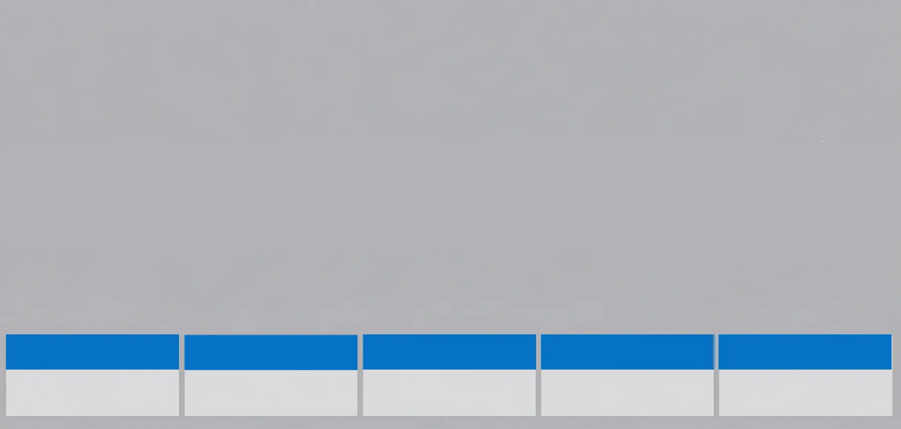
Blue Curb
No stopping or parking allowed. This is an absolute restriction zone with no time exceptions. Always respect blue curb markings to avoid immediate towing and fines.
Kurzparkzone: Time-Limited Parking Zones
Kurzparkzone (short-term parking zone) is Austria's system for managing limited-duration parking in urban areas. These zones allow you to park for a specific period—usually 1-3 hours depending on the location and signage. To park in a Kurzparkzone, you must display a parking disc (Parkscheibe) showing your arrival time. The disc is a simple tool with an arrow indicating when you arrived; parking enforcement checks this to ensure you haven't exceeded your allowed time.
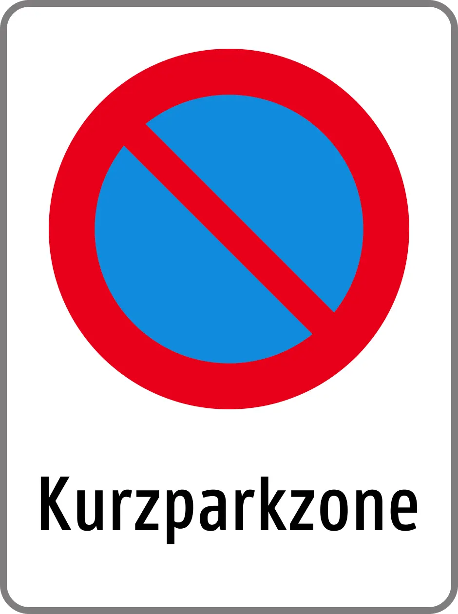
Kurzparkzone Start
Beginning of a short-term parking zone. Display parking disc with arrival time to stay within the time limit.
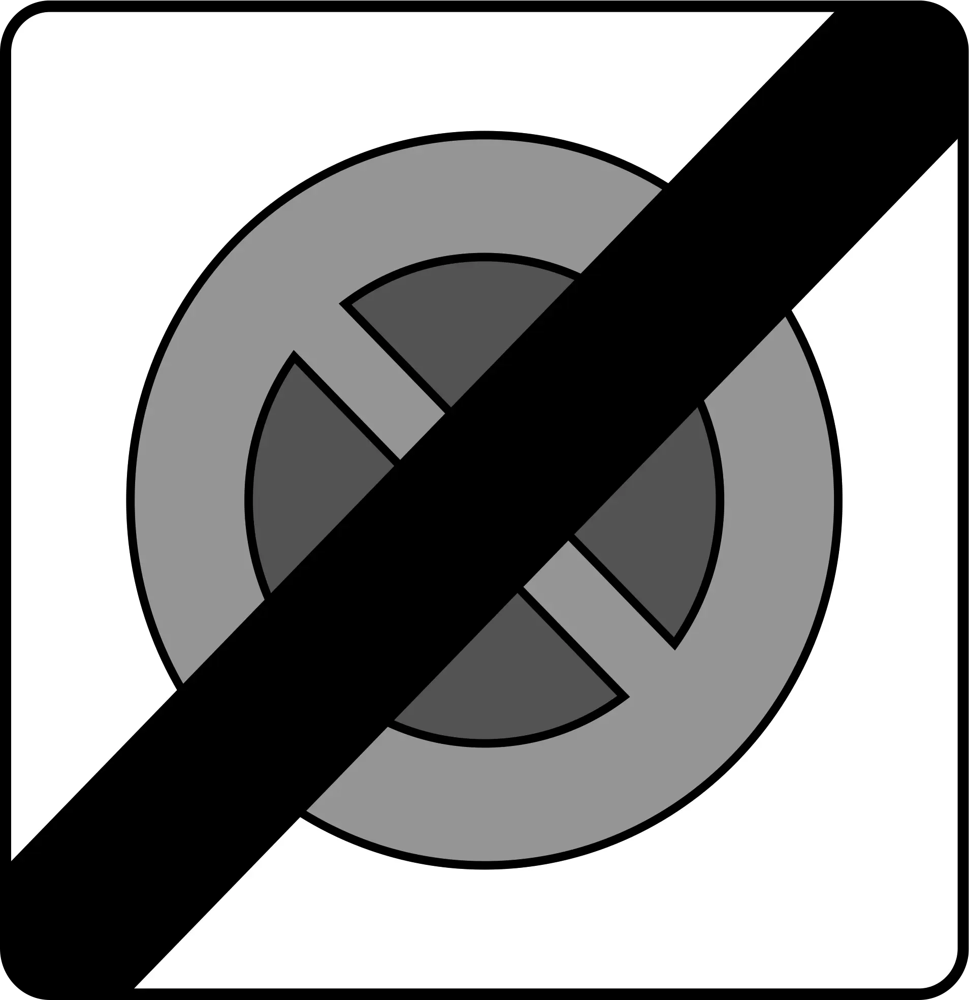
Kurzparkzone End
End of a short-term parking zone. Normal parking rules resume after this point.
Ausgenommen: Exception Signs
Ausgenommen means "except" or "exempted" in German, and these signs modify parking restrictions by indicating who is allowed to park. For example, a "No Parking" sign with "ausgenommen" and a wheelchair symbol means parking is prohibited except for vehicles displaying a disability badge. Common exceptions include disabled drivers, motor tractors, and electric vehicles during charging. Always look for the secondary symbol to understand what exception applies.
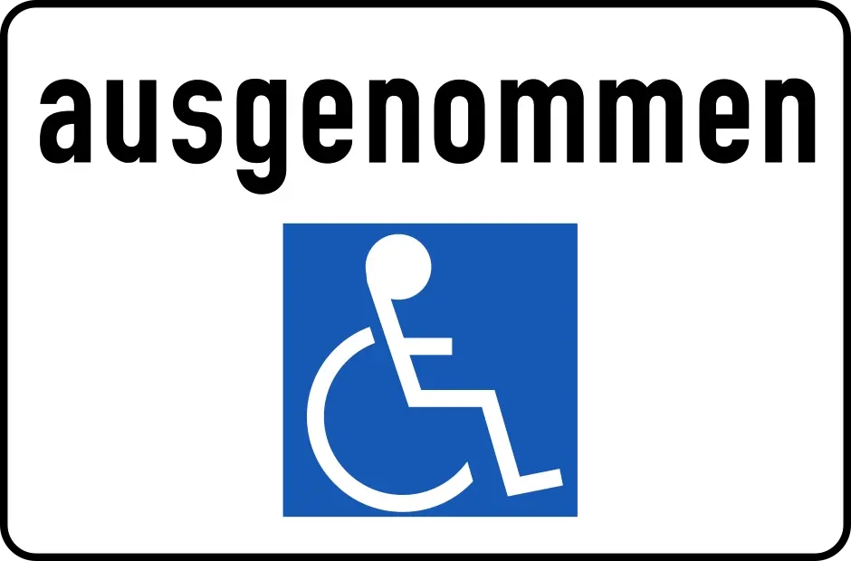
Except Wheelchair Users
Parking prohibited except for vehicles with disabled badge displaying wheelchair symbol.
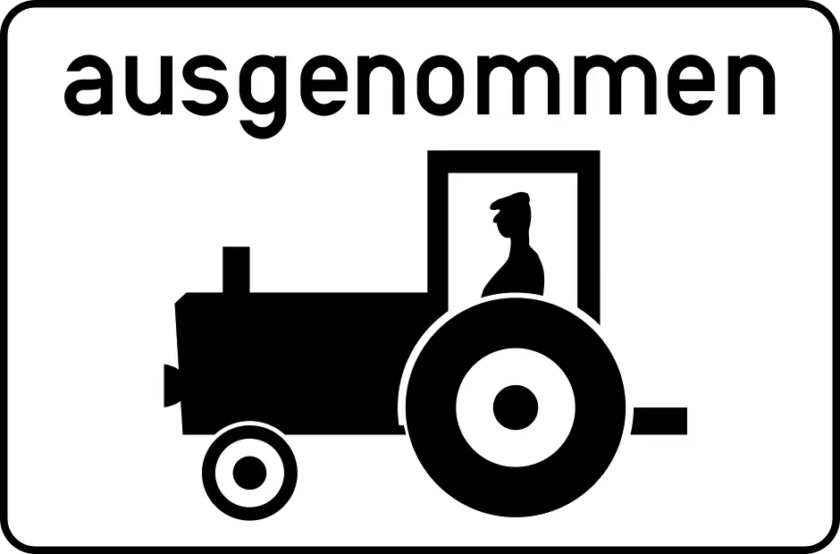
Except Motor Tractors
Parking prohibited except for registered motor tractors displaying proper documentation.
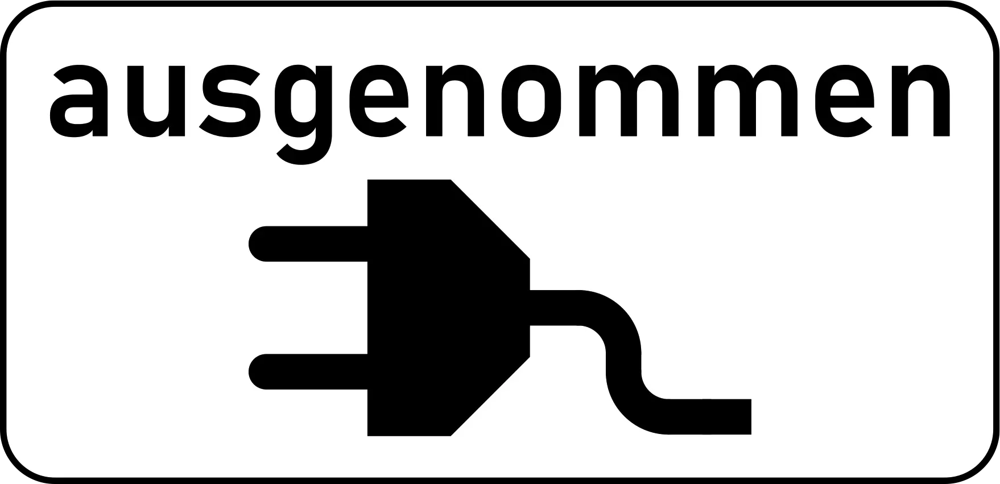
Except Electric Vehicles Charging
Parking prohibited except for electric vehicles during active charging at designated charging stations.
Tow-Away Zones
Abschleppzone (tow-away zone) indicates areas where vehicles are subject to immediate towing if parked illegally. These zones are strictly enforced, and violators face not only the parking fine but also expensive towing and storage fees. Always respect these zone markings.
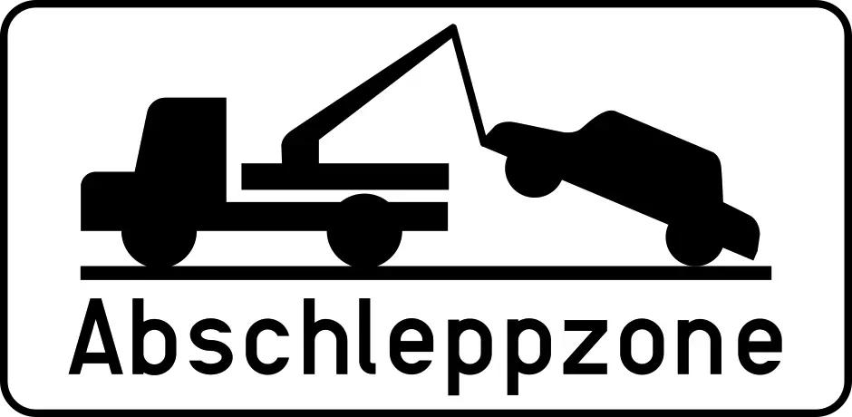
Tow-Away Zone (Abschleppzone)
Vehicles parked in violation will be towed immediately. Incurs towing, storage, and parking violation fines.
No Parking on Odd and Even Days
Some Austrian streets implement alternating day parking restrictions to facilitate street cleaning and traffic management. On odd-day restriction streets, you cannot park on odd-numbered calendar days (1st, 3rd, 5th, 7th, etc.). On even-day restriction streets, parking is prohibited on even-numbered days (2nd, 4th, 6th, 8th, etc.). Signs clearly indicate which restriction applies. These rules require you to understand the current date and plan your parking accordingly.
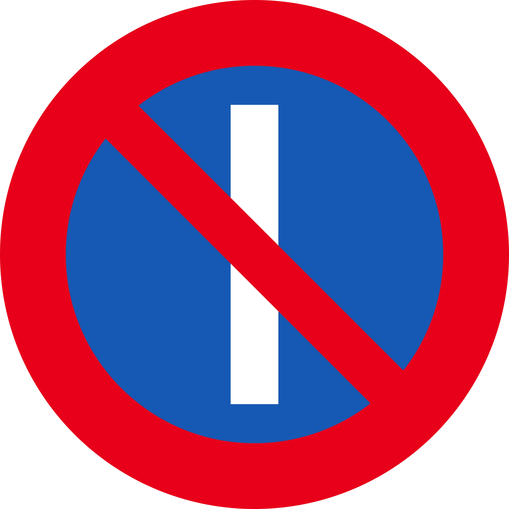
No Parking on Uneven Days
Parking prohibited on odd-numbered days of the month (1, 3, 5, 7, etc.). Allowed on even days.
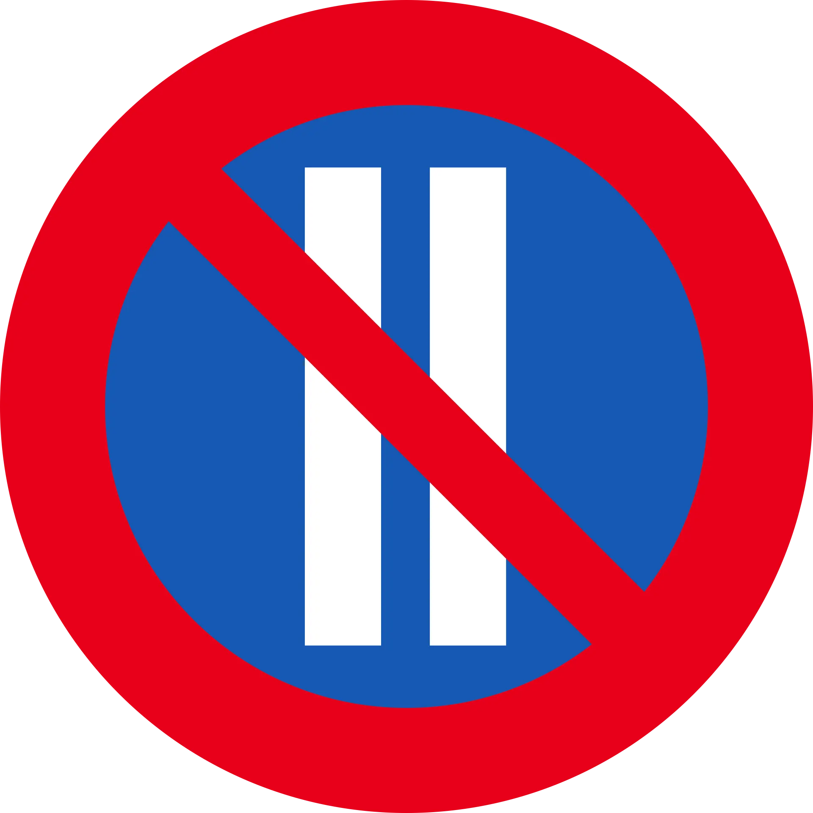
No Parking on Even Days
Parking prohibited on even-numbered days of the month (2, 4, 6, 8, etc.). Allowed on odd days.
Parking Lots and Lanes
Austria clearly marks dedicated parking areas with blue signs displaying "P" for parking. Parking lots (Parkplätze) are organized areas where you can park your vehicle. Parking lanes (marked areas along streets) follow the same rules and are managed like parking lots. Always use designated parking areas when available.
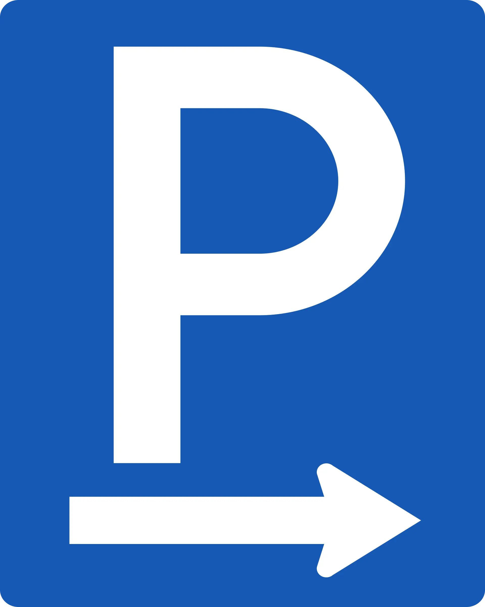
Parking Lot
Designated parking lot or parking area. Free or metered depending on location signage.
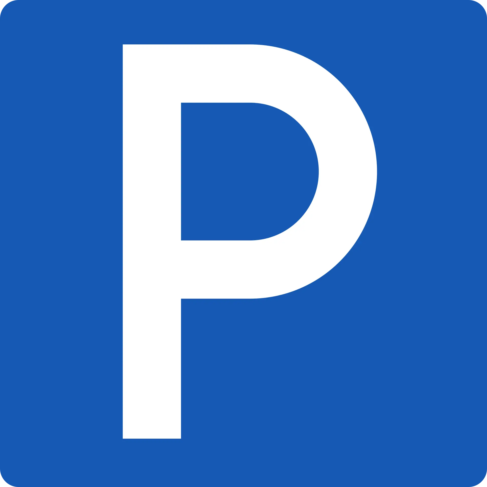
Parking Lane
Marked parking lane along street. Follow time limits and payment requirements as indicated by additional signage.
Additional No Parking Variations
Austria uses various red signs with crossed-out symbols to indicate parking prohibitions. These signs may apply to specific times, days, or vehicle types depending on additional text and symbols. Always read accompanying text carefully to understand the full restriction.
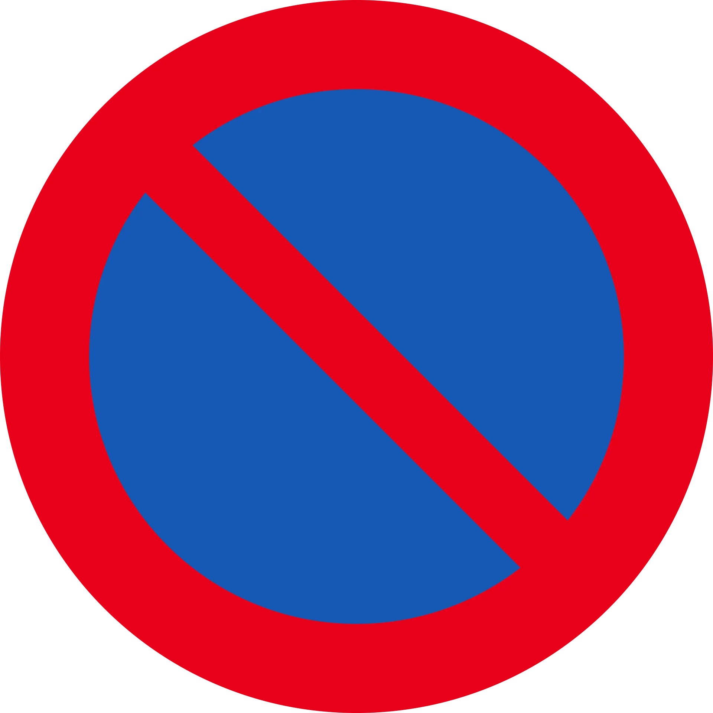
No Parking
General no parking prohibition. Read accompanying text for time limits or day-specific restrictions.
Parking Fines and Enforcement
Austria enforces parking regulations strictly. Violations result in fines depending on severity. Parking in blue curbs, exceeding Kurzparkzone time limits, ignoring odd/even day restrictions, and parking without proper permits all incur fines. Early payment within the specified timeframe typically reduces the fine amount. Municipal and regional authorities set specific fine schedules, so amounts vary by location.
Download Your Austria Parking Guide
Keep this guide handy for quick reference while driving. Download your free Austria parking guide PDF with visual parking signs and rules for offline access.